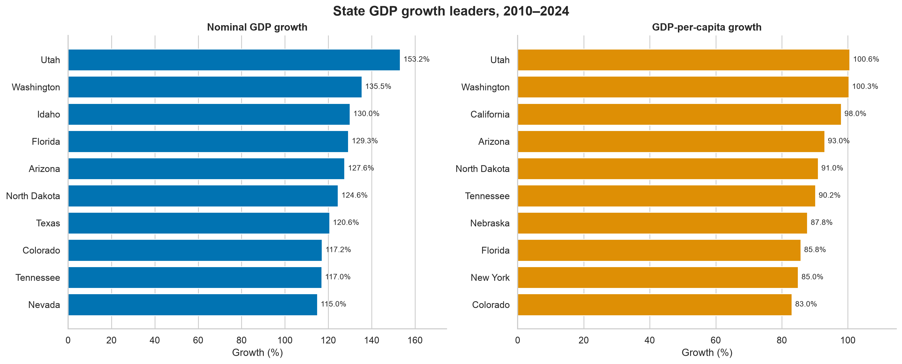
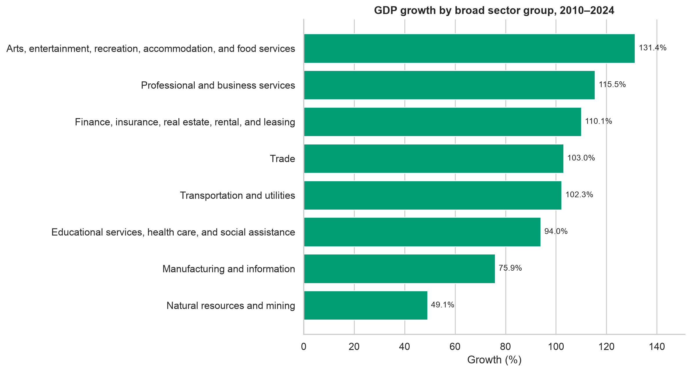
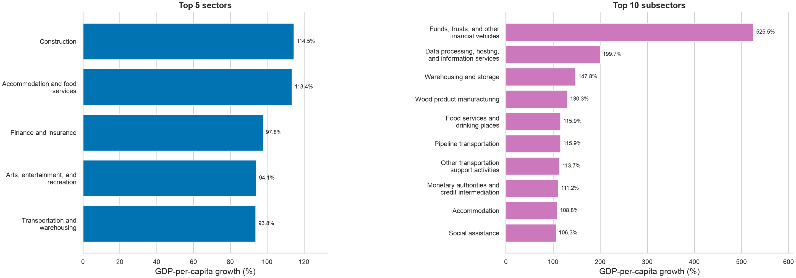
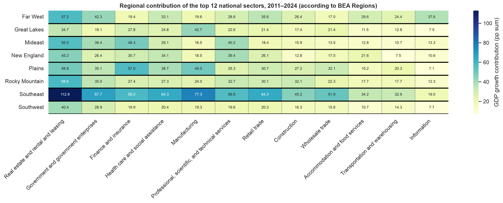
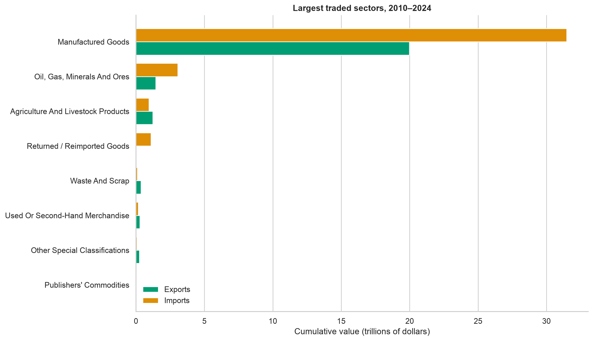
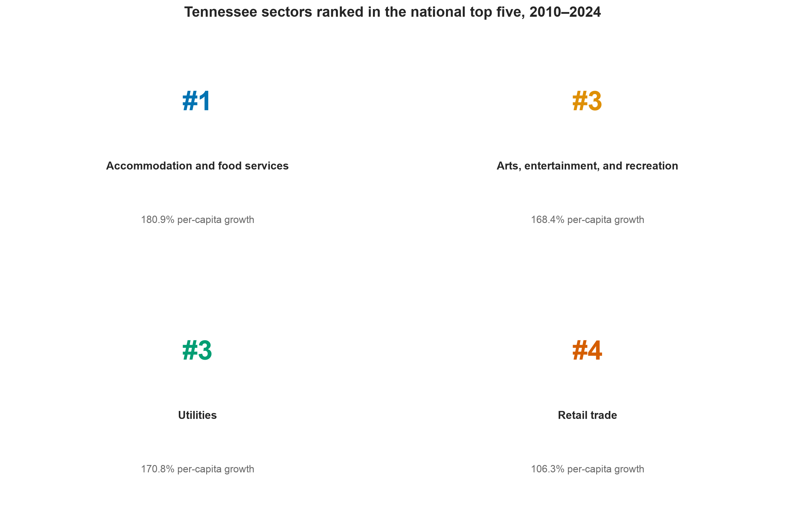
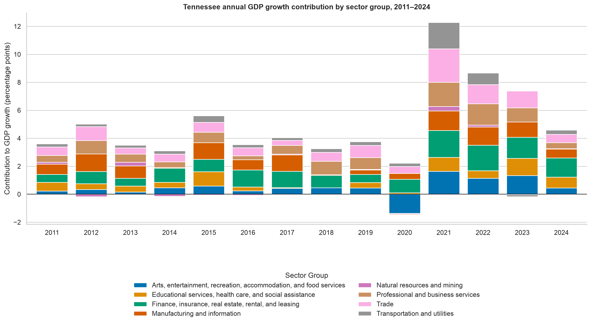

Test Assumptions
The size and breadth of the data meant that each calculation needed to consider the assumptions used to frame the question and interpret the results.
State GDP growth, industry contribution, and international trade, 2010–2024
Nashville experienced significant growth in the years following the pandemic.
Witnessing this raises the question whether our experience was unique, or whether this growth was reflected nationally.
Which states sustained the strongest economic growth?
Which industries drove the change? How does international trade shape the picture?
Study period 2010–2024
Bureau of Economic Analysis
GDP by State and NAICS
U.S. Census Bureau
International Trade Data by State and NAICS
Nominal GDP
Economic output in current dollars
GDP per capita
Output adjusted for population
\[ \text{Growth contribution}_{i,t} = \text{GDP share}_{i,t-1} \times \text{Industry growth rate}_{i,t} \]
This metric estimates how much each industry adds to annual GDP growth.

Utah grew 153.2% in nominal GDP and 100.6% per capita. Tennessee ranked in the top ten on both measures.

Arts, entertainment, recreation, accommodation, and food services grew 131.4%. Professional and business services ranked second at 115.5%.

Construction (114.5%) and accommodation and food services (113.4%) led sectors. Funds, trusts, and other financial vehicles led subsectors at 525.5%.

Real estate contributes strongly across regions, while manufacturing carries more weight in the Great Lakes, Plains, and Southeast.

Manufactured goods accounted for about $20.0 trillion in exports and $31.5 trillion in imports during the period.


Finance, insurance, real estate, rental, and leasing became Tennessee’s most consistent post-2020 contributor. Leisure-related activity also rebounded sharply.
The interactive dashboard lets you compare economic change by state, industry, and year.
To compare the two datasets, the codes were often grouped or stored differently which led to the need for code mapping (both BEA and census data were more inconsistent as the level of detail increased).
Charts and filters had to preserve the selected level of detail. If they weren’t included in the filter context, the aggregations would sum totals across hierarchies.
Initially the comparisons were solely with nominal GDP and GDP-per-capita values, but this didn’t reflect the regional impact of each industry.
The size and breadth of the data meant that each calculation needed to consider the assumptions used to frame the question and interpret the results.
Tableau can aggregate large datasets quickly, but every visualization still needs validation. Confirm that filters and calculated measures use the intended context and level of detail.
Viewing the same data through another context can reveal questions and patterns that the original analysis may miss.
Sources: U.S. Bureau of Economic Analysis and U.S. Census Bureau